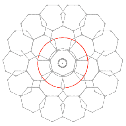

Geometria mística
Els secrets pitagòrics dels números, les formes i les vibracions
Presentació
Arithmos és el terme grec que designa els números, del qual prové l'aritmètica, branca del saber que s'ocupa dels números i de les seves operacions. En les beceroles de la civilització, l'aritmètica va néixer envoltada en un halo de misticisme, precisament per la misteriosa naturalesa dels números. Encara ara, en l'estudi dels números sorgeix una gran pregunta: són un descobriment o una invenció? Certament, els números són idees abstractes formades per la ment humana per a representar la quantitat o la magnitud i, que sense existir materialment, són una part intrínseca de l'univers. Dit d'una altra manera: els números no existeixen en la naturalesa però, des de la perspectiva humana, se'ns presenten com el llenguatge que la naturalesa utilitza per a existir. Els números són una mena de llenguatge, una forma d'informació implícita, inherent, que la nostra ment és capaç de desxifrar i, a través de la qual, la realitat ens proveeix d'informació. D'alguna manera, els números transcendeixen la realitat material i aquesta estranya particularitat que posseeixen fascinà els antics.
Làmines
Geometria mística
Diu la tradició que fou Pitàgores qui va posar els números en el centre del pensament filosòfic i, de fet, també se li atribueix ser el primer en autodenominar-se filòsof, és a dir, "amic de la saviesa". Va néixer l'any -569 a Samos, la Magna Grècia, fill d'una família de mercaders. Sobre la seva vida, envoltada d'una aura llegendària, sabem coses disperses i difícils de verificar, com que va viatjar per tot el món antic i va rebre instrucció de savis grecs, egipcis i caldeus. Amb tot el coneixement adquirit, va crear una influent doctrina ideològica que sempre portà el seu nom, el pitagorisme, i una singular secta religiosa, els pitagòrics.
A la llum dels estudis més recents sobre la matèria, cada cop hi ha més consens acadèmic que allò que actualment coneixem com pitagorisme, va ser el producte de la difusió dels coneixements matemàtics del sacerdoci mesopotàmic en l'àmbit cultural hel·lènic. Tanmateix aquest procés de sincretisme no va ser mecànic ni va estar al marge d'altres influències, com del zoroastrisme iranià, ni se li pot arrabassar el mèrit de ser una doctrina diferenciada de les seves fonts d'inspiració.
"El mode de vida dels pitagòrics", tal com l'anomenaren els filòsofs posteriors, era un complex cos doctrinal al qual només podia accedir una minoria escollida. A semblança de la secta dels òrfics, amb qui es comparen sovint per les seves similituds, els pitagòrics sostenien la realitat de la metempsicosi o transmigració de les ànimes d'una reencarnació a una altra. Aquesta creença sembla que era la causa d'una sèrie de tabús estrafolaris, com el seu rebuig a ingerir determinats llegums, ja que les ventositats que produeix la seva ingesta s'atribuïen al fet que eren ànimes transmigrades. Tanmateix, allò que caracteritzava i feia únics als pitagòrics era el seu culte als números, als que consideraven la mateixa essència de la divinitat. I és aquesta una altra característica del pensament pitagòric, un principi proper al monoteisme, la convicció que tot l'univers és un mateix, un únic ésser.
Els pitagòrics adoraven, per damunt de tot, el número 1, la Mònada, la unitat, a la qual consideraven l'origen de tot l'existent, és a dir, l'Arxé del cosmos. Concebien la resta dels números com manifestacions fragmentades de la unitat original de la Mònada i creien que tota la realitat física era el seu resultat. Per a Pitàgores i els seus seguidors, l'estudi dels números era inseparable de l'estudi de les formes i del so, ja que consideraven que tot número es manifesta físicament com a forma i com a vibració. Per això, a banda de l'aritmètica, els pitagòrics cultivaven amb passió la geometria, la música i l'astronomia.
El vincle màgic de l'aritmètica amb la geometria era causat per les propietats absolutament encisadores dels polígons regulars, formes perfectes que difícilment poden ser trobades a la natura, però els patrons dels quals són detectables en el creixement de les fulles dels arbres, els pètals de les flors o els ruscs de les abelles. Entre totes les formes geomètriques que els pitagòrics adoraven especialment, hi ha el triangle i el pentagrama. Les propietats màgiques o divines del triangle s'ocultaven en el símbol de la Tetraktys, disposició simètrica de 10 punts en quatre fileres, amb un, dos, tres i quatre punts en cadascuna. El significat místic que els pitagòrics feien d'aquest símbol no ha arribat fins a nosaltres amb detall, però, sense dubte, està relacionat amb la seva formulació aritmètica de la matèria: l'un representa el punt; el dos, la línia; el tres, la superfície; el quatre, el volum, la realitat tridimensional. La veneració pitagòrica del pentagrama sembla tenir una explicació encara molt més complexa i s'especula, amb força base, que tindria a veure amb la relació que l'estrella regular de cinc puntes guarda amb la secció àuria o proporció divina, el número Φ.
Per un altre costat, la relació de l'aritmètica amb la música venia determinada per l'estudi que Pitàgoras va fer dels intervals musicals del monocordi, a través del qual va demostrar l'existència d'una relació entre la longitud de la corda i la vibració sonora que produeix. Amb això, Pitàgoras no fou només el primer en sistematitzar l'afinació musical i definir de manera racional les notes musicals, també va ser pioner en teoritzar la naturalesa de tota la matèria com una vibració. La unió d'aritmètica, geometria, música i astronomia portada a terme pels pitagòrics va donar lloc a una complexa explicació racional del cosmos que va ser molt influent en el pensament filosòfic fins gairebé l'edat moderna. L'Harmonia de les Esferes, Harmonia Còsmica o Música Universal dels pitagòrics va sobreviure la crítica aristotèlica i encara era considerada en els cercles intel·lectuals europeus en el segle XVII.
Pot semblar paradoxal però, a la llum del coneixement científic actual, algunes de les afirmacions dels pitagòrics sobre l'essència de l'univers no són tan puerils ni estrambòtiques com en el passat es va arribar a pensar. Que la matemàtica és el llenguatge de la naturalesa i que tota la matèria és una forma de vibració de l'energia, són afirmacions que els físics moderns podrien compartir amb els pitagòrics, sense massa problema.
Del que no hi ha dubte, és que la doctrina pitagòrica va suposar un impuls important del pensament racional i va assentar algunes bases imprescindibles d'allò que avui anomenem ciència. En posar al centre del pensament filosòfic l'aritmètica i la geometria, ciències exactes per antonomàsia, els pitagòrics van venir a implantar el virus del pensament racional en el bell mig del pensament mitològic de l'antiguitat.
Res està quiet, tot es mou, tot flueix,
dialècticament, com una conversa.